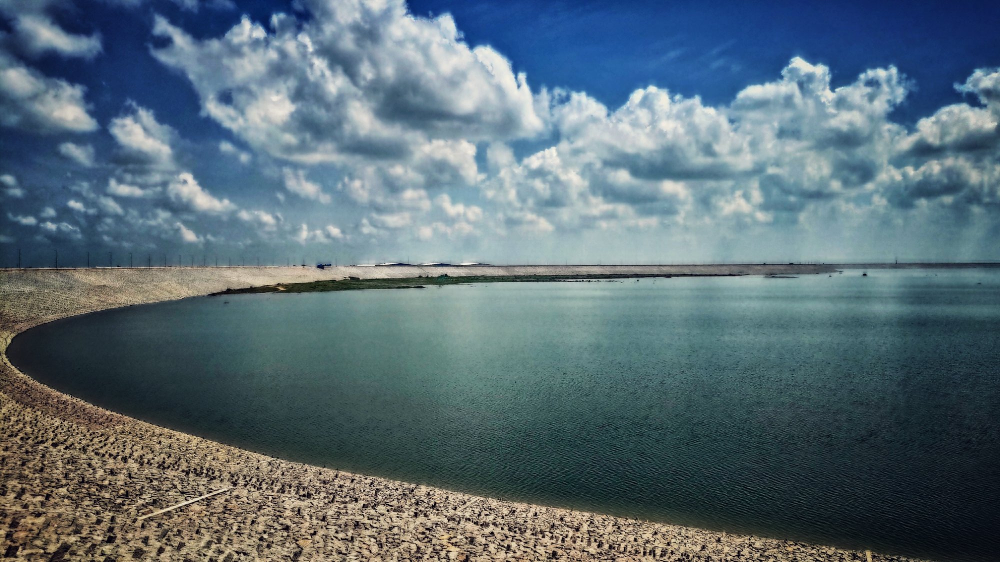

Kondapochamma Reservoir
Kondapochamma Reservoir in Siddipet is a beautiful water body surrounded by lush greenery and hills. It is a popular destination for picnics, boating, and enjoying scenic views of nature.
Location: Siddipet, Telangana, India
Activities: Boating, picnicking, nature walks
Transportation: Accessible by road, located near major bus routes.